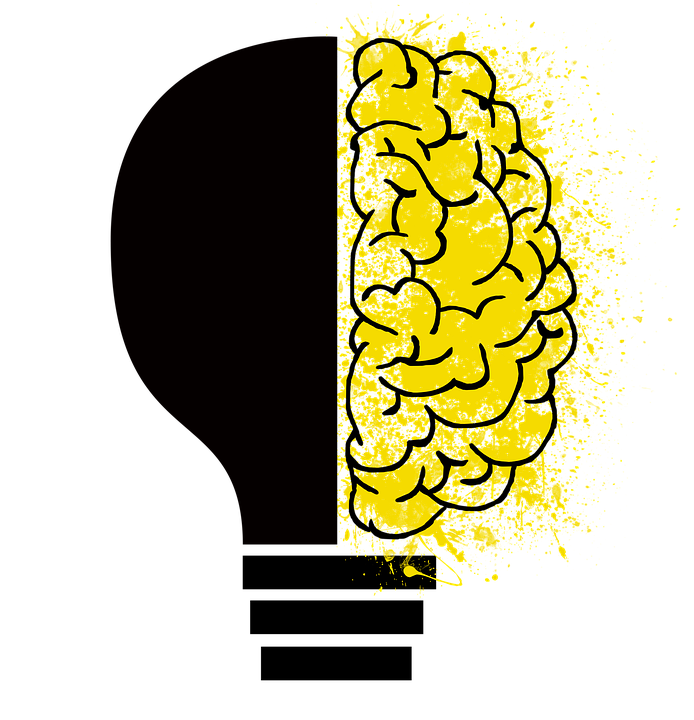
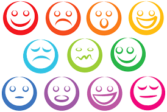
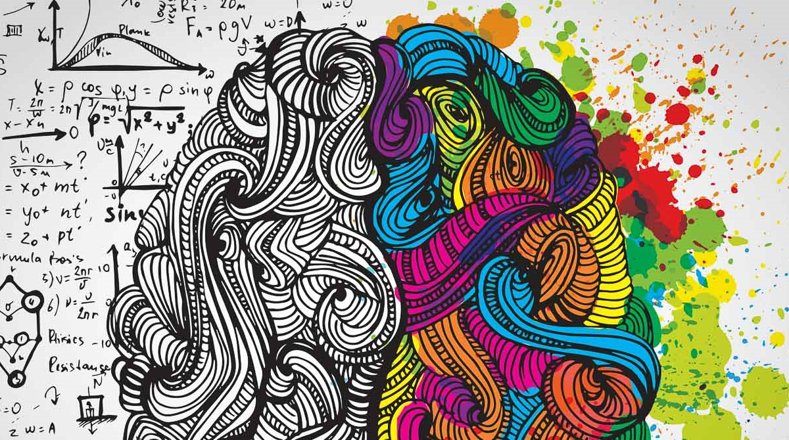
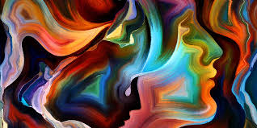
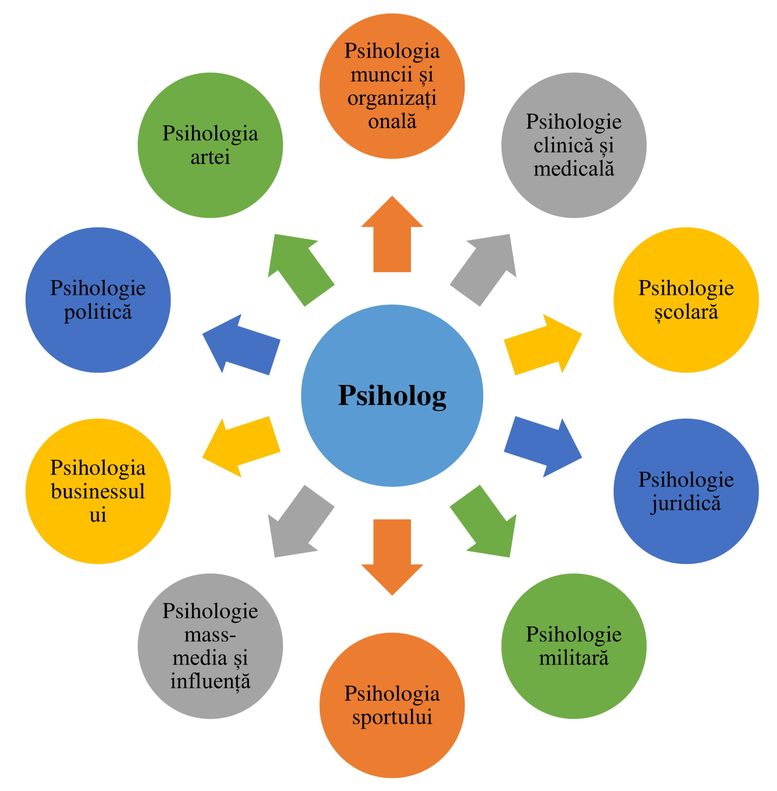

Acestea sunt doar unele dintre ramurile psihologiei, ele fiind în realitate mult mai multe.
 |  |
Psihologia contemporană prezintă în sine un sistem dezvoltat de domenii, care includ o serie de disciplini şi direcţii ştiinţifice diverse. Structura psihologiei ca ştiinţă este formată din diverse ramuri atât fundamentale, care prezintă în sine direcţii de cercetări ştiinţifice, dezvoltându-se relativ de sine stătător, cât şi aplicative (speciale).
Luând în considerare aceste circumstanţe, cât şi faptul că în timpul prezent sistemul ştiinţelor psihologice continuă să se dezvolte activ (la fiecare 4-5 ani apare o nouă direcţie), va fi mai corect să vorbim despre un sistem complex de ştiinţe psihologice în dezvoltare și nu despre o singură ştiinţă - psihologia.
|  | Să analizăm câteva dintre cele mai cunoscute ramuri fundamentale şi aplicative (speciale) ale psihologiei.
|
Acestea sunt doar unele dintre ramurile psihologiei, ele fiind în realitate mult mai multe.
| |
|  |
Psihologia ocupă o poziţie centrală nu numai ca produs al tuturor celorlalte ştiinţe, ci şi ca sursă posibilă de explicare a formării şi dezvoltării lor.(Piaget, 1966).
Academicianul B.M. Kedrov a încercat să exprime grafic locul psihologiei în sistemul ştiinţelor prin situarea ei în interiorul unui triunghi echilateral. Mai jos este prezentat triunghiul menționat.

Psihologia integrează toate aceste ştiinţe şi, la rândul ei, are influenţă asupra lor, devenind modelul general al cunoştinţelor umane.
|  |  |
|  | Știați că..?Psihologia artei analizează experiența estetică prin demersuri empirice. A fost fondată în 1876 de G.T. Fechner.Teme de cercetare ale psihologiei artei de-a lungul timpului au fost: preferința, gustul, cercetarea numărului de aur, rolul factorilor culturali în experiența estetică.Psihologi care s-au aplecat asupra studiului experienței estetice au fost: G.T. Fechner (fondator), E. Mach, Wilhem Wundt, H. von Helmholtz, G.D. Birkoff, Hans Eysenck, R. Frances, F.Molnar, D. Berlyne.Psihologia artei reprezintă unul din zecile de domenii aplicative ale psihologiei. Apariția și impunerea sa a devenit o posibilitate reală în condițiile în care arta a cunoscut o înflorire aparte și s-a conturat pe deplin estetica - știința care studiază legile creării frumosului, perceperii și receptării sale plenare. Există patru virtuți - aptitudini definitorii pentru un artist (fantezia este apreciată ca foarte generală, deci nespecifică):
|